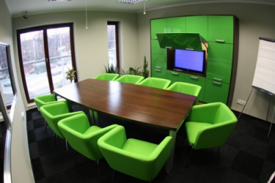

Polski instytut badawczy działający od 2005 roku. Słuchamy, analizujemy i doradzamy — pomagamy znaleźć drogę do rynkowego sukcesu.
2005 |# 2008 |#### 2011 |######## 2014 |############## 2017 |#################### 2020 |########################## 2022 |################################### 2024 |########################################## 481
Jesteśmy instytutem referencyjnym dla sieci handlowych. Stawiamy na indywidualne podejście — słuchamy, analizujemy, doradzamy.
Każdy klient otrzymuje wsparcie merytoryczne dopasowane do jego potrzeb — bez szablonów.
Teleinformatyczny system B2B integrujący sondażowanie, przetwarzanie danych i raportowanie.
Specjaliści z wieloletnim stażem. Praca zgodnie z Kodeksem ESOMAR i standardami PKJPA.
| /01 | CATI. | Ilościowe · Telefon | Computer-Assisted Telephone Interviewing. Tysiące wywiadów miesięcznie w badaniach sondażowych, społecznych, konsumenckich i B2B — w Polsce i za granicą. Własne studio we Wrocławiu od 2005 r., profesjonalne stanowiska, opieka doświadczonych supervisorów oraz praca zdalna w modelu Cati@Home. |
| /02 | CAWI. | Ilościowe · Online | Computer Assisted Web Interview — ankieta internetowa wypełniana samodzielnie. Realizujemy w oprogramowaniu CADAS CAWI. Klient partycypuje w projekcie: testuje kwestionariusz, na bieżąco podgląda wyniki. Pełne bezpieczeństwo — szyfrowany dostęp i podwójne szyfrowanie danych. |
| /03 | MOBI. | Ilościowe · Tablet | Ewolucja tradycyjnych badań typu „papier-ołówek" do pełnoprawnych wywiadów wspomaganych komputerowo. Ankieter posługuje się tabletem z możliwością wykorzystania multimediów i technik wizualizacji pytań (drag & drop). Automatyczny zapis GPS oraz nagrywanie wywiadów. |
| /04 | FGI. | Jakościowe · Grupa | Focus Group Interviews — jedna z najpopularniejszych metod badań jakościowych. Dyskusja grupowa kontrolowana przez moderatora. Stosowana do testowania nowych konceptów (logo, opakowania, reklamy) i badania zachowań konsumenckich. Przebieg wywiadu jest rejestrowany. |
| /05 | IDI. | Jakościowe · Indywidualne | Individual In-Depth Interview — druga najpopularniejsza metoda badań jakościowych. Rozmowa moderatora z respondentem w celu poznania postaw, intencji i motywów działań badanego. Sprawdza się przy tematach drażliwych. |
| /06 | FoBo. | Jakościowe · Online | Focus Board — platforma do jakościowych badań online. Wywiady indywidualne i grupowe przez Internet. Rekrutacja telefoniczna wg screenera, realizacja przez Zoom (z opcją tłumaczenia symultanicznego), transmisja na żywo przez YouTube, nagrania A/V i transkrypcje. |
| /07 | Mystery Shopper. | Audyt · Retail & Usługi | Tajemniczy klient — kilkuset audytorów w całej Polsce realizuje projekty audytowe dla sieci retailowych i usługowych. Weryfikacja standardów obsługi, ekspozycji materiałów POS i procedur sprzedażowych. |
| /08 | PaaS. | Technologia · SaaS | Platform as a Service — rozwiązanie pozwalające wypożyczyć na określony czas dostęp do technologii i oprogramowania badawczego. Dedykowane firmom, które nie chcą inwestować w sprzęt. Badania obejmują CATI, CAPI, CAWI, MOBI oraz Mystery Shopper. |
| /09 | Fokusownia. | Infrastruktura · Wrocław | W pełni wyposażona fokusownia z podglądownią oraz oddzielnym pomieszczeniem dla tłumacza przy ul. Prusa we Wrocławiu. Profesjonalny sprzęt audio z tłumaczeniem symultanicznym, video streaming grup fokusowych, bezprzewodowy Internet. Studio przystosowane dla osób niepełnosprawnych. |
| /10 | Standardy. | OFBOR · ESOMAR | Przestrzegamy norm jakości — pracujemy zgodnie ze standardami OFBOR, co daje klientowi gwarancję wysokiej jakości całego procesu badawczego. Działamy również w oparciu o Kodeks ESOMAR. |

Dzielimy się wynikami wybranych badań — od skuteczności portali pracy w IT, przez infolinie hostingowe, po plany podróżnicze Polaków.
Instytut o pracowników merytorycznych oparty, rozszerzany siatką ankieterską i tajemniczymi klientami. Rekrutacja stała — CV przyjmujemy niezależnie od aktualnych ogłoszeń.
ul. B. Prusa 1/48
50-319 Wrocław
NIP: PL8851557675
info@mands.pl
+48 71 322 06 86zwykle odpowiadamy w ciągu 24h
rekrutacja@mands.plankieterzy · tajemniczy klienci · merytoryka